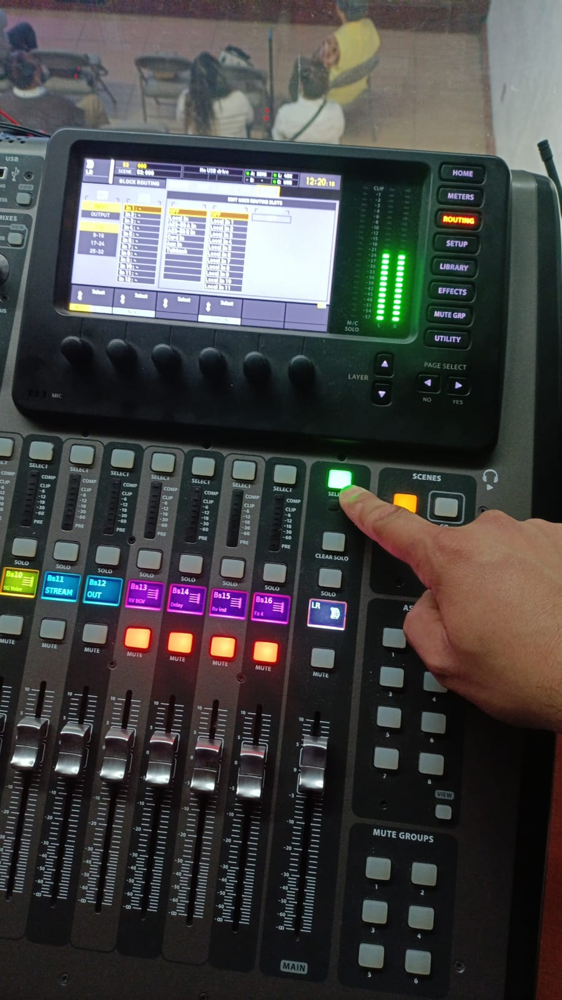
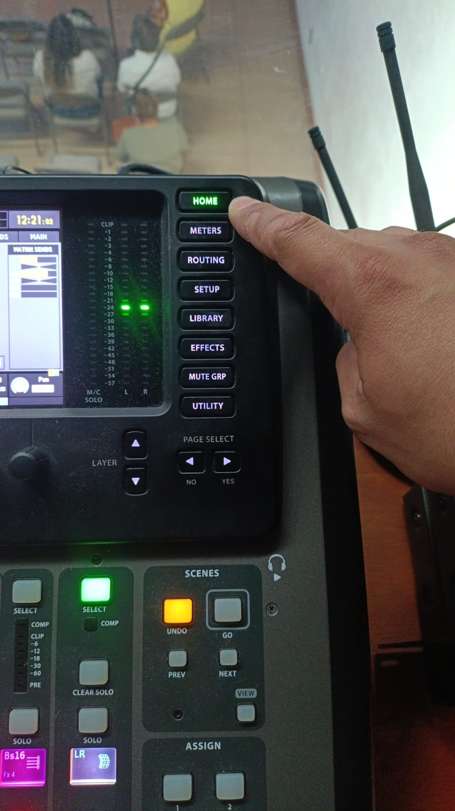
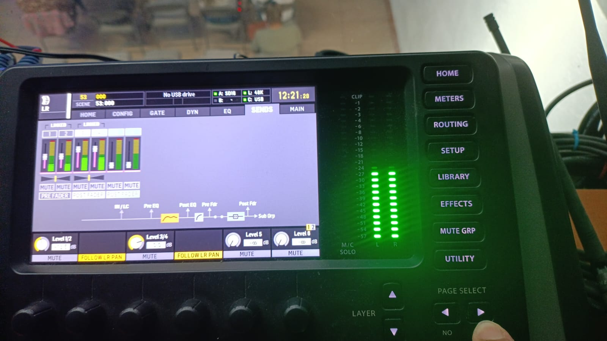
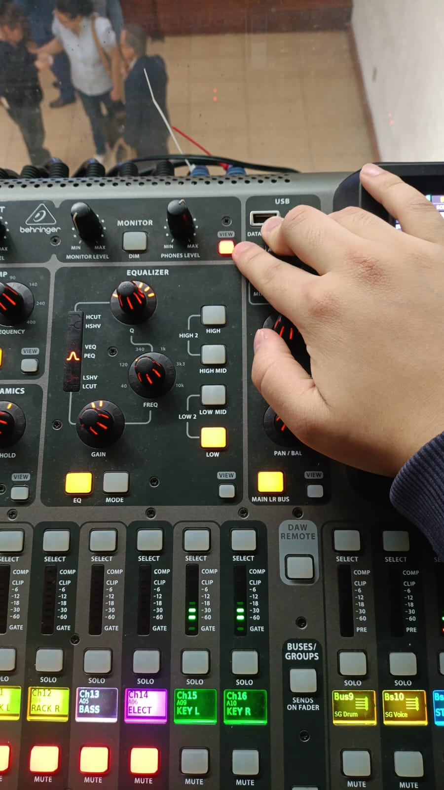
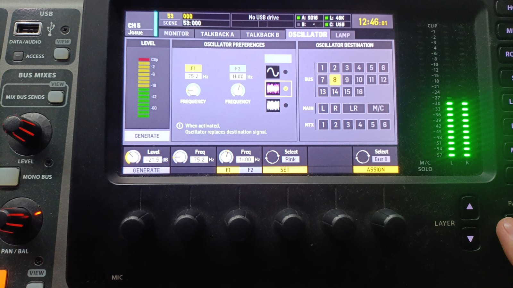
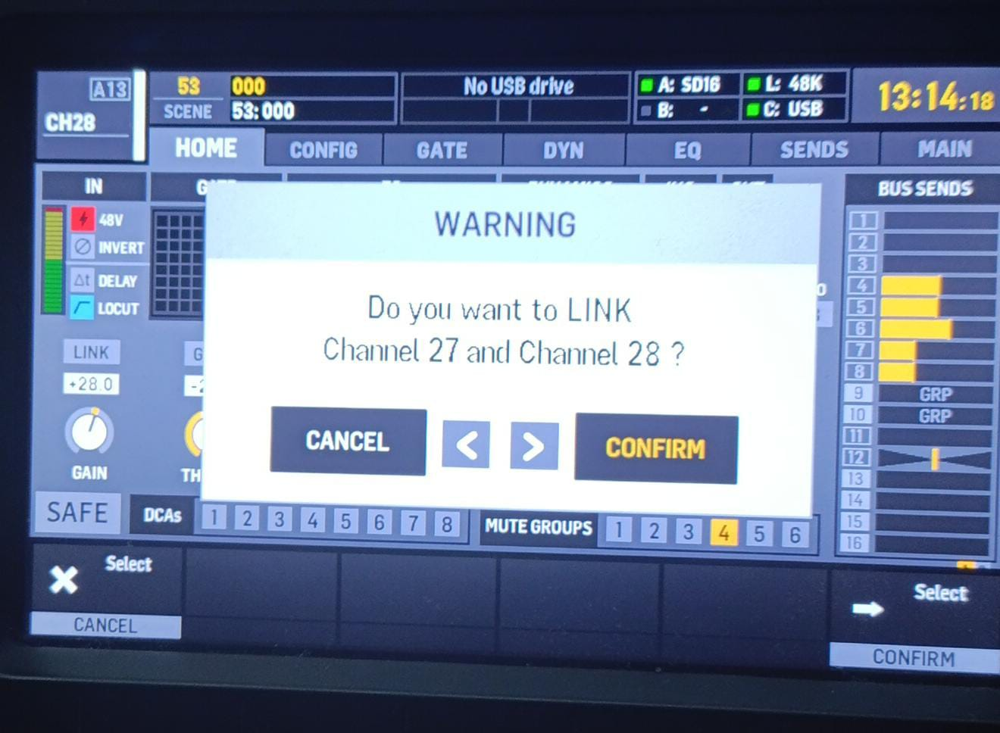
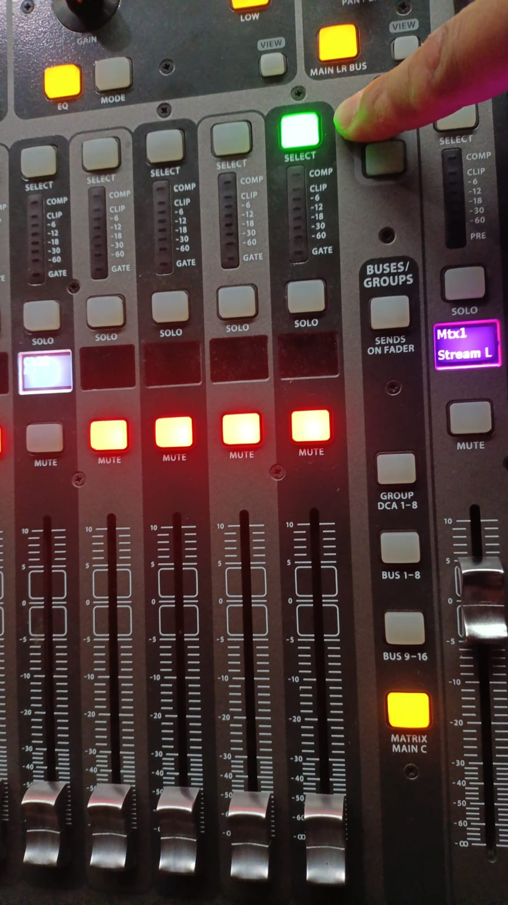
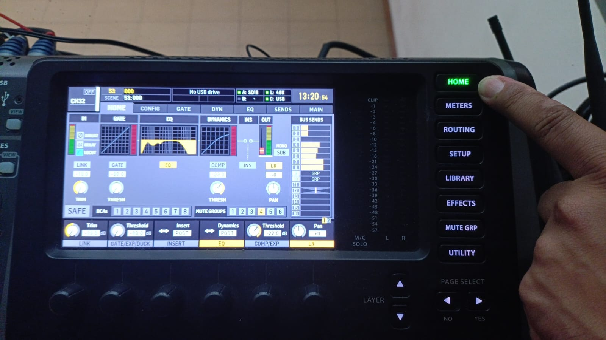
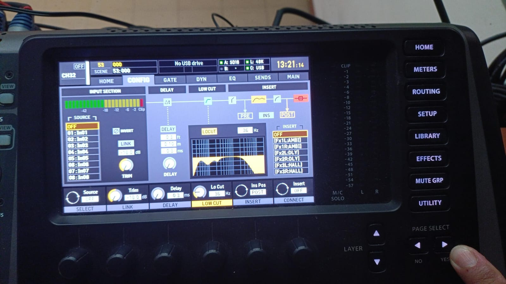
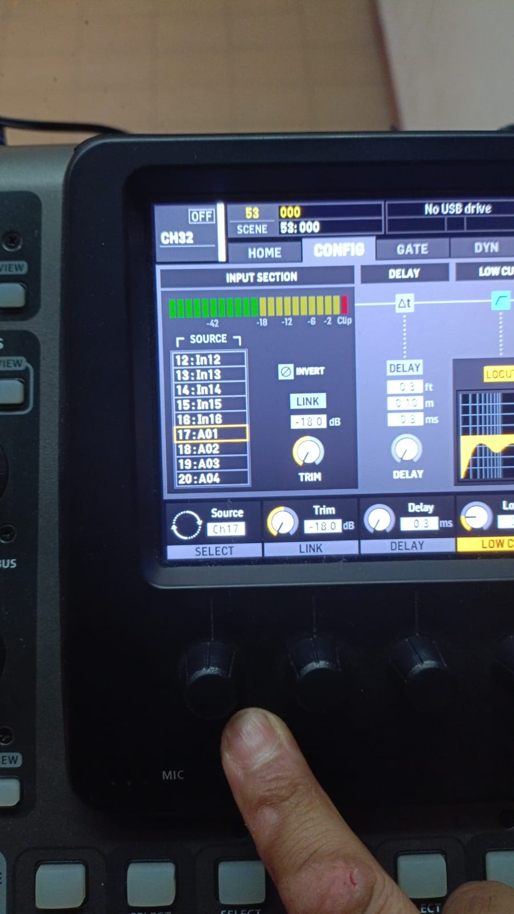

CONSOLA-EMETH
Paso 1: Ubicarte en el main de audio LR

Paso 2: Ir a la pestaña de HOME

Paso 3:Navegar entre las paginas hasta encontrar la que dice "SENDS" y mutear los canales de stream

Paso 1: Presionar el botón de "view" para que podamos obtener las caractéristicas

Paso 2: Navegar hasta la pestaña "oscillator" y elegir la opción ruido rosa, del lado derecho esta las opciones de salida de los buses

Paso 1: Seleccionar un canal
Paso 2: ir a la pestaña Home y presionar link automaticamente se linkea el canal de la derecha

Paso 1: Seleccionar un canal disponible en la consola

Paso 2: Irse a la pestaña config presionando el botón Home

Paso 3: Visualizar que canal esta disponible en el snake para vincularlo a la consola seleccionar en la ventana source

Las locales son IN y las remotas son A, las del snake son las A
